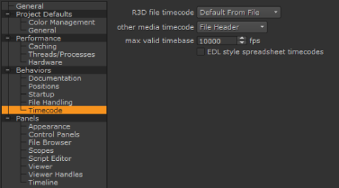

Adding media is as simple as drag-and-drop from a file browser or selecting File > Import File(s) or Import Folder(s). The application imports your media into the bin view providing you with a thumbnail of all of your clips and preserving the original folder and file hierarchy.
The media is soft imported, creating symbolic links to locations on disk. See Using the Copy Exporter for information on how to quickly consolidate your media and projects, or Caching Media Locally to help stabilize playback.
NOTE: Projects containing large amounts of movie files (for example .r3d and .mov) may exceed the number of available file handles per process, causing problems opening new files or projects and exporting.
You can increase the default limit of 1024 by entering the following command from the terminal, then running the application from the same session:
ulimit -Sn 2048
Clips with no inherent frame rate information are assigned a frame rate at ingest as specified in the Preferences.
| 1. | Open the Preferences dialog by pressing Shift+S. |
| 2. | Select Behaviors > Timecode from the sub-menu on the left. |

| 3. | Use the RED file timecode dropdown to determine R3D clip behavior: |
• Default from File - use the default set by the R3D file in question.
• Absolute Timecode - force the use of the Absolute Timecode as specified in the clip metadata.
• Edge Timecode - force the use of the Edge Timecode as specified in the clip metadata.
| 4. | Use the other media timecode dropdown to determine clip behavior for all other clips: |
• File Header - the file metadata header is used to derive the timecode, if it exists. This option defaults to Frame Number if the header is missing.
• Frame Number - ignores the metadata header, even when present, and derives the timecode from the frames in the clip.
| 5. | Set the max valid timebase allowed from the image header, above which the value is clamped. |
Image files are often created with application specific timebase values in the header description. This can lead to reading in spuriously high frame rates, and the clamp aims to prevent this from happening.
If your clips do have extremely high frame rates, increase this value as necessary to avoid clamping.
| 6. | Enable or disable EDL style spreadsheet timecodes: |
• When disabled, the srcOut and dstOut values use the film convention, representing the last frame of the cut.
• When enabled, the srcOut and dstOut values use the video convention, representing the frame directly after the cut.
| 7. | Click OK to save your settings. |
|
|